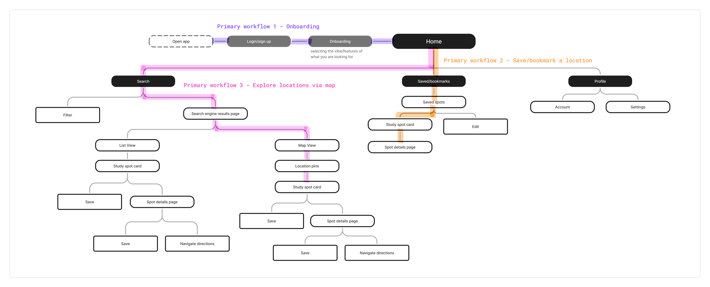

Lock In
I wanted to design an educational technology app, which led me to create Lock In. Lock In is an app that helps college students find study spots based on their individual study needs and environmental preferences.
UX Researcher
UX Designer
Just me!
Figma
3 months
Overview
I decided to create an app that addressed a problem I personally experienced as a college student: finding study spaces that actually match my study preferences. Through user interviews, I learned that various factors, such as noise level, seating, lighting, and crowd density, affect students' ability to focus and influence where they choose to study. Using these insights, I designed Lock In to address this problem. Through this project, I conducted user research, wireframing, prototyping, visual design, and usability testing.
College students often struggle to find study spaces that match their specific needs.
Existing tools such as Google Maps & Yelp are more general, and don't account for the unique preferences students have when choosing where to study. As a result, many students end up wasting time searching, end up in unsuitable places, or just default to the same limited set of locations instead of discovering better options.
User Research
Conducting interviews
I conducted interviews to better understand my target audience, college students, and what goes on in their minds when it comes to finding places to study. I wanted to learn more about their current experiences, why they chose certain study spots over others, and what specific characteristics they look for in those environments. I was also curious about what motivates them to leave the house and seek out new places to study in the first place.

INTERVIEW THEMES
Key insights
After 4 interviews with college students, I categorized my findings into 4 main themes:
-
Study locations are a tool for resetting focus – Students aren't just finding a place to study; they use physical space to change their mental state. Many interviewees intentionally use the discomfort of public spaces to trigger productivity.
-
Place's qualities strongly influences where students choose to work – Students filter out which spaces to go to based on specific environmental characteristics, but currently rely on trial-and-error. Lighting and seating availability came up strongly. Emotional features like “fresh vibe,” brightness, and aesthetics mattered a lot to these students.
-
Social influence and social presence matter – Discovery often happens socially. Many interviewees noted their motivation increases when others are present and working. Even students who prefer studying alone still noted how they benefit from ambient social accountability. Social presence is motivating, even if there is no direct interaction.
-
Uncertainty about availability creates friction – Students try to predict busyness by time of day, but there’s no reliable system. All four interviews floated some version of wanting present-time availability information to know how busy study spaces are.
CONCEPT
Elevator Pitch
For college students who want to better find spots to study in, Lock In is a mobile solution that provides personalized recommendations for people based on their study needs and environmental preferences. Unlike other location-based apps, like Google Maps or Yelp, Lock In is specifically tailored to help students discover new go-to places to work in.
Design Process
Primary Workflows
I aligned on 3 primary workflows to guide the design of my app. This helped me identify what features and interactions mattered most, and prioritize the core user experience. Below are the primary workflows I chose:
-
Onboarding – Opening the app for the first time and answering questions about preferred study environments and needs
-
Exploring locations – Browsing/discovering study spots through app, such as thorugh the interactive map experience
-
Saving locations – Being able to save study spots for future reference and revisiting later
SITEMAP
Digital Sitemap
I created a digital sitemap to shows the hierarchy and navigation across my app. It helped me plan the user journey and overall app's flow since I thought about how to organize/structure the app. This helped me think about how my 3 primary workflows would appear on the app and how they would interconnect with each other.

STORYBOARDS
Creating Storyboards
I created 2 storyboards to represent a sequence of events a user will experience while using my app. I got to put myself in the user's shoes and think about the series of events that a user will experience before, during, and after using my app. It felt very humanizing and fun to make a couple storylines of a couple situations that might lead people to use my app.


SKETCHES
Paper Wireframes
I made hand-drawn wireframes for my 3 primary workflows in order to brainstorm the app's structure. This allowed me to visualize my ideas & explore different layouts. I focused on the app's structure rather than the aesthetics.


Low-Fidelity Wireframes
Low-Fidelity Designs
After paper prototypes, I created low-fidelity wireframes to bring my ideas into a digital space. This allowed me to refine the structure, layout, and user flows before moving into visual design. Below are the wireframes I created for each primary workflow.
FLOW ONE
Onboarding
.svg)
FLOW TWO
Exploring Locations
.svg)
FLOW THREE
Saving Locations
.svg)
High-Fidelity Wireframes
WIREFRAMES
High-Fidelity Designs
After finalizing the low-fidelity wireframes, I then moved onto creating higher-fidelity designs. I incorporated visual design elements, such as my logo, colors, typography, etc. to bring the app closer to its final look and feel. Below are the final designs for my three primary workflows.
FLOW ONE
Onboarding
.svg)
FLOW TWO
Exploring Locations
.svg)
FLOW THREE
Saving Locations
.svg)
Prototype Walk-Through
Takeaways
Final Thoughts
This project helped me understand the importance of making design decisions based on real user behavior by actually talking to the people you’re designing for. Through conducting many interviews and usability testing with actual college students, I learned that study habits tend to depend heavily on unique preferences and situational factors. Students aren't just looking for a place to study but for environments that actually support their ability to focus, stay motivated, and get productive work done. If I had more time, I would want to spend more time on creating a stronger brand identity for Lock In to improve the app's overall visual cohesiveness. I'd also want to run more usability testing sessions to identify more opportunities for improving the app.
wanna see my other projects? explore all projects →